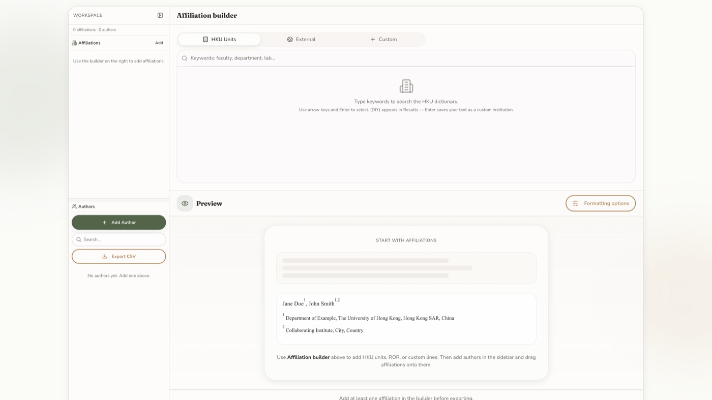
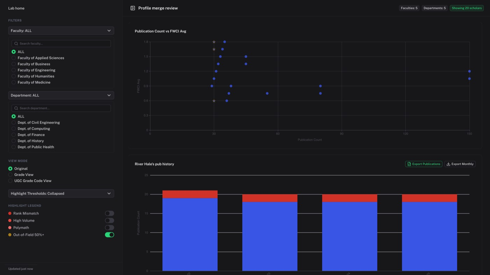
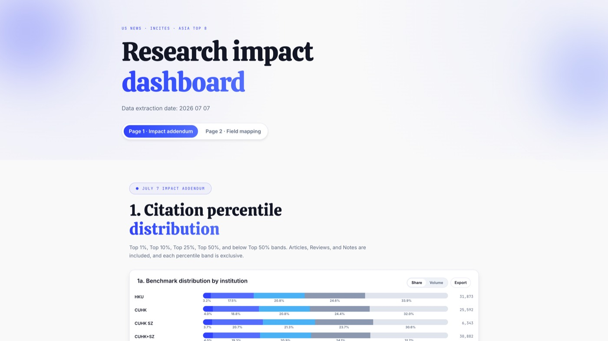
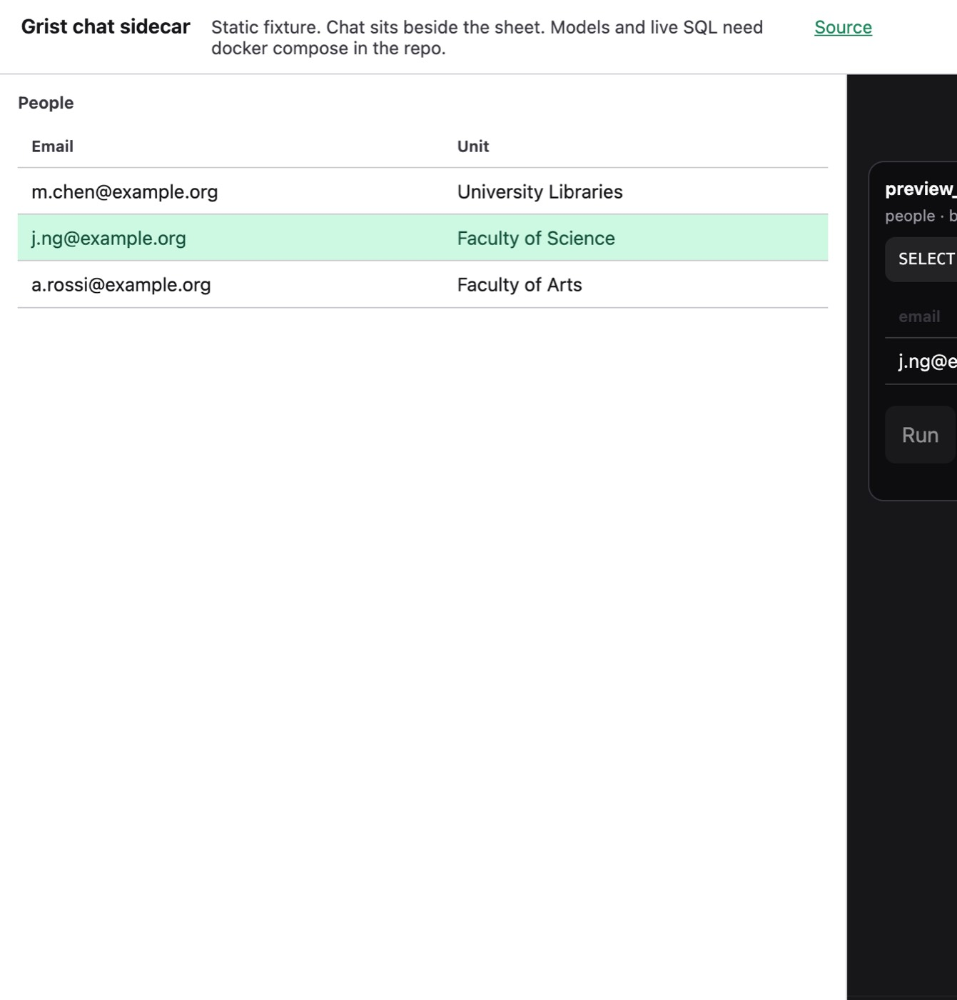
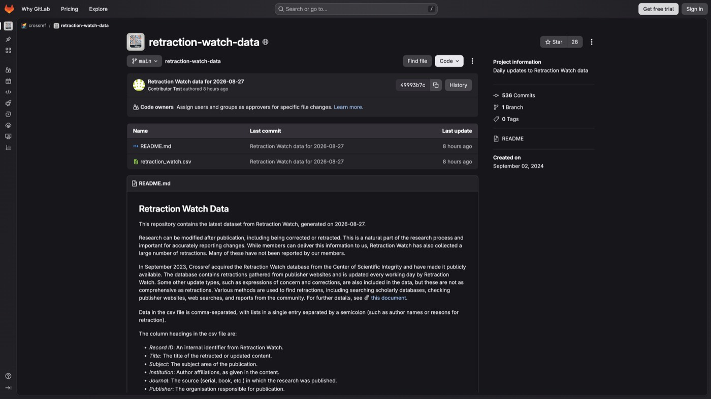
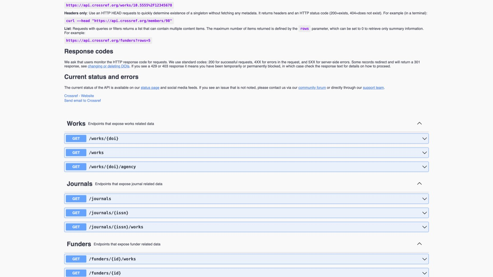

Affiliation formatter
Copy affiliations without retyping
Build author-affiliation blocks from HKU units and ROR, then copy to Word or LaTeX. Processing stays client-side except ROR queries.
Library systems and research-information tooling
I build the review UIs libraries use on author names, affiliations, and research metrics.

Public demos and methods are open. Internal CRIS, talent, and scoring systems stay private.
Affiliation formatter
Build author-affiliation blocks from HKU units and ROR, then copy to Word or LaTeX. Processing stays client-side except ROR queries.

Author identity lab
Explore profile-merge flags and affiliation drift in one shell. Static fixtures are synthetic and describe no real people.

Asia research dashboard
Filter Asia Top 8 metrics, map faculties, and export results. Bundled JSON keeps the public app free of vendor logins.

Grist chat sidecar
Same-origin widget next to the sheet. This Pages demo is a static fixture. Docker compose runs unmodified Grist, guest cookies, and live models. Keys stay out of git.
No hosted dumps, no campus login. Code and writeups only.

Retraction merge
Merge the official Watch dump with Crossref updates on a six-hour cycle. The repository ships the method, never the resulting dump.
Dataset Retraction Watch on Crossref GitLab Source: open-retraction-merge

Scholar identifiers
Trace outbound links and claimed DOI author-slots across public APIs. Fictional examples only. Identifiers never come from co-authors.
I work on research-information systems at the University of Hong Kong. Most of that is operational: identifiers, affiliations, and dashboards that a librarian can actually open.
This site is the public slice. GitHub holds the demos and method notes. Campus systems, scoring, and named researcher files are not here.
Available for library systems and data-services roles.